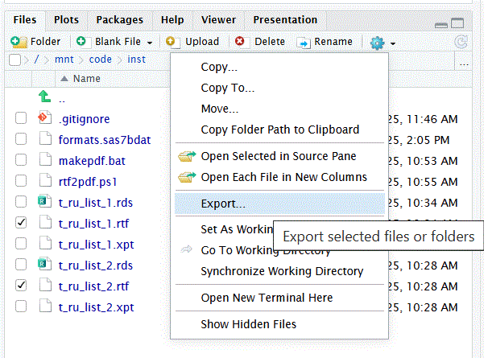
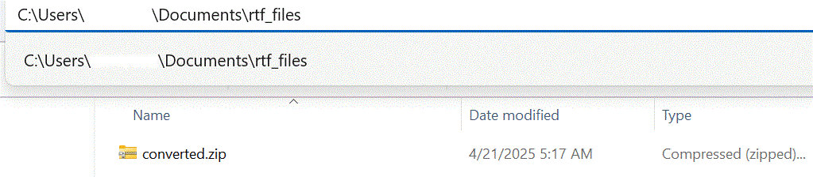

Convert-RTF-to-PDF
Convert-RTF-to-PDF.RmdVignette Build Datetime
message(paste0('Datetime: ',Sys.Date(),':',Sys.time()))
#> Datetime: 2025-11-06:2025-11-06 15:59:57.976443Create Folder Structure on Windows
Step 1.) Create the following folder structure using your MUDID:
C:/Users/MUDID/Documents/
Step 2.) Create the following 2 sub-folders under the Documents folder created in Step 1:
C:/Users/MUDID/Documents/rtf_files/
C:/Users/MUDID/Documents/scripts/
Step 3.) Copy the following 2 files into the scripts folder created in Step 2:
https://github.com/gsk-tech/repfun/blob/main/inst/rtf2pdf.ps1
https://github.com/gsk-tech/repfun/blob/main/inst/makepdf.bat
Step 4.) Create RTF outputs as needed, for example see Vignette ‘Create-AE-Tables’
Step 5.) From within R Studio files pane, select and Export the RTF files produced in Step 4 (see below).

Step 6.) Click download (see below).
Step 7.) Run the batch file copied in Step 3 (see below).
The following file is produced from Step 7 (see
below). 
Step 8: Final step is to upload the converted.zip file from R
Studio files pane (see below). 
For future conversions repeat Steps 5 thru 8. (The most recent zip file in the downloads folder will be processed.)